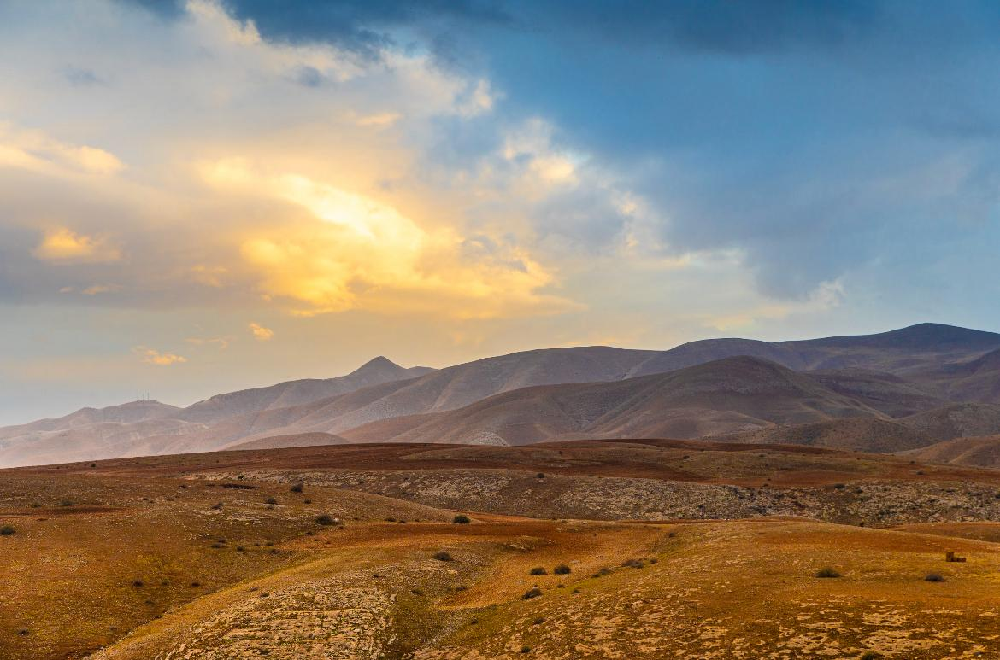

חטמ״ר 417
חטמ״ר 417
חטמ״ר 417
חטמ״ר 417
ב-03.11.1967 - הוחלט על הקמת החטיבה המרחבית - חטיבת הבקעה, שהתפרסה לאורך בקעת הירדן ופעלה למניעת חדירת מחבלים מעבר הירדן.
חטיבת הבקעה הוקמה מתוך חטיבת הצנחנים במילואים 80. למפקד החטיבה הראשון מונה אל"מ רפאל איתן.
אל החטיבה הוכפפו כוחות נוספים על מנת לבצע את פעולות הביטחון השוטף בגזרה.
בשנת 2003 הורחבה גזרת האחריות החטיבה לכיוון צפון והחטיבה הפכה לחטיבת הבקעה והעמקים.
כיום חטיבת הבקעה והעמקים מגנה בגזרתה ממצדה בדרום ועד נחל מיצר בצפון, מסכלת טרור בגזרתה ומונעת חדירות בגבול המזרחי.
כל זאת על מנת לאפשר ביטחון ותחושת ביטחון לתושביה ולעוברים בגזרה.
